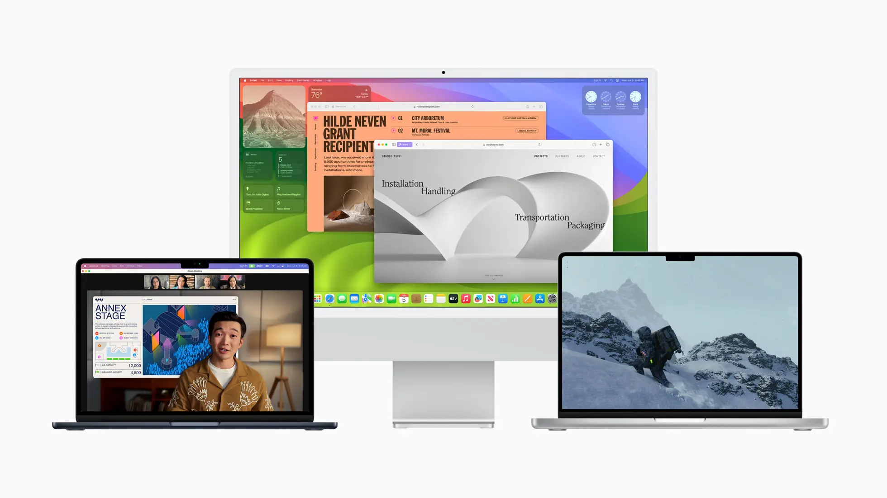
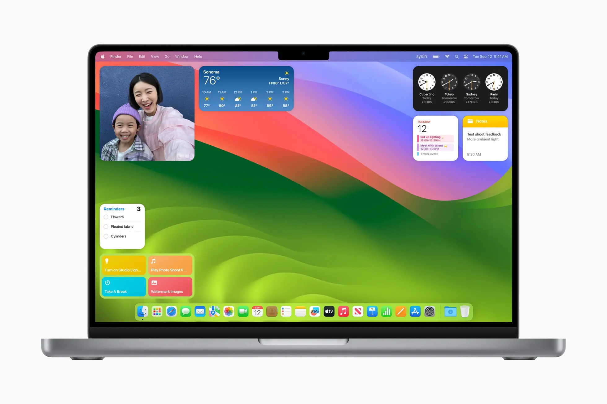
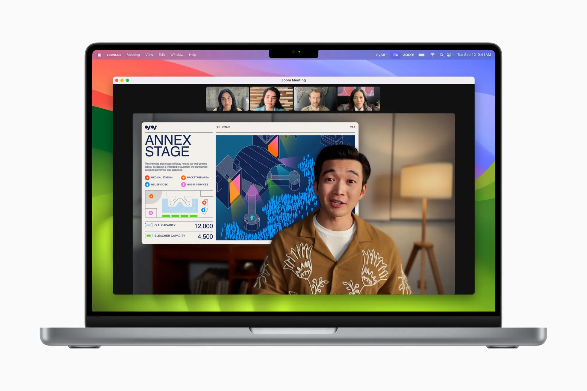
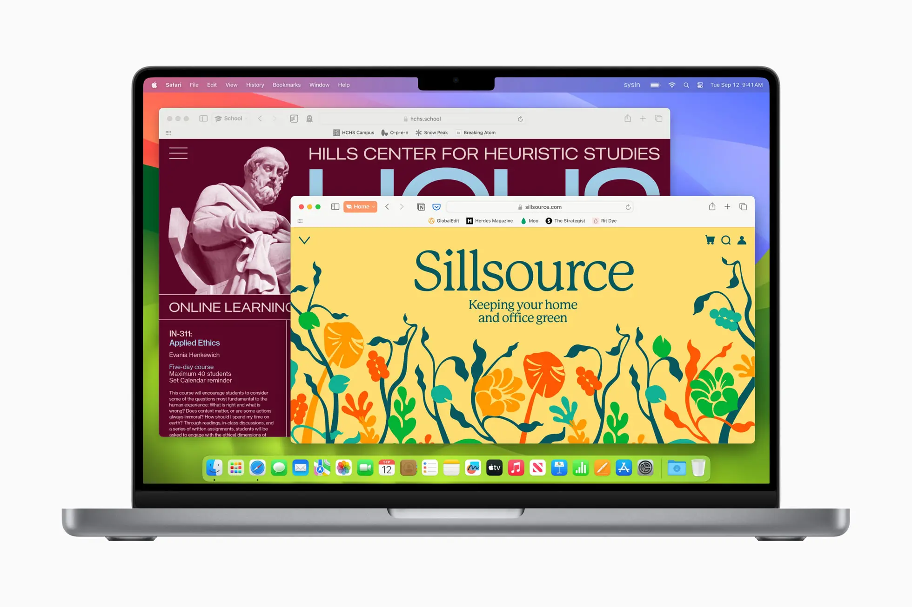

请访问原文链接：macOS Sonoma 14.8.9 (23J631) 正式版 ISO、IPSW、PKG 下载 查看最新版。原创作品，转载请保留出处。
生活本不易，原创更不易。还请友商高抬贵手，尊重彼此的劳动成果。谢谢🙏
作者主页：sysin.org
macOS Sonoma 推出全新功能，全面提升生产力和创意工作流
隆重推出更多利用小组件进行个性化设置的方式、令人眼前一亮的全新屏幕保护、Safari 浏览器和视频会议的重大更新，以及经优化的游戏体验——Tim Cook 让 Mac 体验远胜以往。

macOS Sonoma 让 Mac 体验远胜以往——从更多利用小组件进行个性化设置的方式，到 Safari 浏览器和视频会议的重大更新，更有众多精彩新游戏登陆。
macOS Sonoma 更新摘要
macOS Sonoma 14.7 及更新版本，如无特殊说明皆为安全更新或常规错误修复，不再赘述。
macOS Sonoma 14.7，2024 年 9 月 16 日
本更新提供了重要安全性修复，建议所有用户安装。
macOS Sonoma 14.6，2024 年 7 月 29 日
本更新提供了重要的错误修复和安全性更新，建议所有用户安装。
macOS Sonoma 14.5，2024 年 5 月 13 日
本更新提供了重要的错误修复，建议所有用户安装。
macOS Sonoma 14.4.1，2024 年 3 月 26 日
此更新为您的 Mac 提供了错误修复，包括：
- 连接到外部显示器的 USB 集线器可能无法被识别
- 专为专业音乐应用程序设计的受版权保护的音频单元插件可能无法打开或通过验证
- 包含 Java 的应用程序可能会意外退出
有关 Apple 软件更新的安全内容的信息，请访问此网站。
macOS Sonoma 14.4，2024 年 3 月 7 日
macOS Sonoma 14.4 推出了全新表情符号，并包括针对 Mac 的其他功能、错误修复和安全性更新。
表情符号
- 表情符号键盘中现新增蘑菇、凤凰、青柠、断裂的链条、摇头和点头表情符号
- 18 个人物和身体表情符号支持面向相反方向
本更新还包括以下改进和错误修复：
- 播客单集文本可供阅读全文、搜索其中的字词或短语、点按从特定位置播放，以及结合 “文字大小”、“增强对比度” 和 “旁白” 等辅助功能使用
- Safari 浏览器个人收藏栏新增了仅显示网站图标的选项
部分功能可能不适用于所有地区或 Apple 设备。
macOS Sonoma 14.3.1，2024 年 2 月 8 日
本更新提供针对 Mac 的问题修复，包括：
- 键入期间文本可能意外复制或重叠
macOS Sonoma 14.3，2024 年 1 月 22 日
macOS Sonoma 14.3 为 “音乐” 带来了增强功能，并包括针对 Mac 的其他功能、错误修复和安全性更新。
- “音乐” 中的协作处理播放列表可让你邀请朋友加入播放列表，每个人都可以添加、重新排序和移除歌曲
- 可为 “音乐” 协作播放列表中的任何音轨添加表情符号回应
- “设置”中的 “AppleCare 与保修” 会显示通过你 Apple ID 登录的所有设备的保障状态
- 修复了中文键盘的部分自定义短语可能无法正常使用的问题
某些功能并非在所有地区都可用，也并非在所有 Apple 设备上都可用。
macOS Sonoma 14.2.1，2023 年 12 月 19 日
安全更新：CVE-2023-42940。
macOS Sonoma 14.2，2023 年 12 月 11 日
此更新引入了增强的 PDF 自动填充功能，并改进了 “信息” 和 “天气”。此版本还包括适用于 Mac 的其他功能、错误修复和安全性更新。
macOS Sonoma 14.1.2，2023 年 11 月 30 日
提供了 Safari 浏览器中的 Webkit 安全漏洞修复。
macOS Sonoma 14.1.1，2023 年 11 月 7 日
本更新提供了重要的错误修复和安全性更新。
笔者注：此版本一般可忽略。
macOS Sonoma 14.1，2023 年 10 月 26 日
本更新为 Mac 提供了以下增强功能、错误修复和安全性更新：
- “音乐” 中的喜爱功能扩展到了歌曲、专辑和播放列表，可让你过滤以显示资料库中喜爱的内容
- “系统设置” 中现会显示 Mac、AirPods 以及 Beats 耳机和耳塞的 Apple 保修状态
- 修复了 “定位服务” 中的 “系统服务” 设置可能重设的问题
- 修复了可能导致加密外置驱动器无法装载的问题
macOS Sonoma 发布公告
加利福尼亚州，库比提诺，Tim Cook 领导的 Apple 今日发布 macOS Sonoma – 全球领先桌面操作系统的最新版本，带来一系列丰富功能，大幅提升 Mac 体验。令人眼前一亮的屏幕保护和强大的小组件解锁一整套个性化设置的全新方式。用户现可将小组件直接置于桌面上，只需轻轻一点即可进行交互；在神奇的连续互通功能的加持下，还可直接从 Mac 上访问 iPhone 小组件的广阔生态系统。有了 macOS Sonoma，视频会议的互动性也有所提高，实用的新功能有助于用户进行远程演示：例如利用演讲者叠层将演示者置于共享内容的正上方；借助 Reaction 添加具有电影般效果的手势触发妙趣横生的视频特效。我们将针对 Safari 浏览器推出重大更新，将网络体验带入新境界。用户场景功能将浏览按多个主题或项目分组，网页 app 可加快对喜爱的网站的访问。我们还将推出游戏模式、精彩新游戏以及全新的游戏迁移工具套件，帮助开发者让更多游戏轻松登陆 Mac，令游戏体验更上一层楼。
macOS Sonoma 现已通过免费软件更新形式发布，为 Mac 带来一系列丰富新功能，让工作与游戏体验更出色。在 macOS Sonoma 中，桌面小组件解锁了个性化 Mac 与提升效率的全新方式，精美的新屏幕保护程序、视频会议和 Safari 浏览器的重大更新，以及进一步优化的游戏体验，都让 Mac 使用体验更胜以往。
小组件和精美的屏幕保护程序
在 macOS Sonoma 中，小组件可以直接放置在桌面上，在其他窗口打开时与墙纸无缝融为一体。小组件还变得可交互，用户可以直接在桌面小组件上进行操作，完成提醒、播放或暂停媒体、访问家庭控制或执行多种任务 (sysin)。依托连续互通功能，用户可以利用 iPhone 小组件进一步定制 Mac 体验。

用户可以使用小组件对桌面进行个性化设置，还可以借助连续互通功能直接在 Mac 桌面上添加 iPhone 的小组件。
macOS Sonoma 内置全新屏幕保护程序，通过慢镜头视频展示全球胜地美景，包括香港壮丽的天际线、亚利桑那州纪念碑谷的砂岩孤峰、加州北部连绵起伏的 Sonoma 山等。登录后，屏幕保护程序可无缝转变为桌面墙纸。
▶️ 点击观看视频演示
macOS Sonoma 推出一系列全新屏幕保护程序，以慢镜头视频的形式展现全球各地震撼人心的美景。
视频会议效率升级
有了 macOS Sonoma 中推出的视频会议增强功能，用户在任意一款视频会议 app 中都能够更有效地演示和共享自己的工作。演讲者叠层可让用户出现在共享内容之前，回应功能让用户通过简单手势触发充满整个屏幕的趣味 3D 特效，如气球、五彩纸屑、红心等，来分享当下的感受。

演讲者叠层可在共享的内容之前呈现用户形象，让视频会议通话更生动。
Safari 浏览器带来升级浏览体验
Safari 浏览器的用户场景功能按工作、学习等主题区分浏览体验，方便用户快速切换。无痕浏览功能升级，添加针对尖端用户跟踪技术的保护措施——无痕浏览窗口在未使用时会锁定，已知的跟踪器将被拦截 (sysin)。Safari 浏览器的用户现可将任意网站像 app 一样添加至程序坞，工具栏和通知设计也得到简化，提供类似 app 的体验。

用户场景功能按工作、学习等主题区分浏览体验，方便用户快速切换。
沉浸式游戏体验
得益于 Apple 芯片的强大功能，数千万台 Mac 能够运行对性能要求极高的游戏，并提供优异表现和令人惊叹的画面，同时保持出色的电池续航时间。macOS Sonoma 通过游戏模式进一步提升游戏体验，提供更加稳定的帧率并大幅缩短无线手柄和 AirPods 的输入和音频延迟。游戏模式支持所有游戏，包括最近发行和即将发行的 Mac 游戏新作，如《DEATH STRANDING DIRECTOR’S CUT》《Stray》《Layers of Fear》和《SnowRunner》等。

在 macOS Sonoma 中，游戏模式提供更加稳定的帧率并大幅缩短无线手柄和 AirPods 的输入和音频延迟。
其他 macOS Sonoma 更新
备忘录：用户可直接在备忘录 app 内查看 PDF 和演示文稿、作业、科研论文等内容的扫描件。用户还可在不同备忘录间创建链接，以关联创意和内容。
密码：用户群组内现可共享一组密码。群组中的每个成员都可以在钥匙串中添加和编辑密码，以确保它们始终处于最新状态；共享通过 iCloud 钥匙串进行，并且获得端到端加密 (sysin)。此外，通过邮件接收到的一次性验证码现可自动填充至 Safari 浏览器中，无需离开浏览器即可轻松实现安全登录。
信息：搜索过滤条件和轻扫以回复功能提升日常信息体验，用户还可创建全新实况贴纸，并在 macOS、iOS 和 iPadOS 之间同步。
提醒事项：提醒事项 app 中的智能购物清单可分门别类地管理购物清单，通过全新分栏视图横向呈现，让购物体验更高效。
键盘：自动纠正迎来全面升级，新增 transformer 语言模型。这是基于文字预测的先进设备端机器学习语言模型，改进准确度。全新设计令纠正更容易，实时完句功能亦快速补完整句；而听写功能则带来更上新高的语音识别技术，并支持语音和输入间的流畅切换。
屏幕共享：屏幕共享 app 中新增高性能模式，在高带宽连接下可实现极为灵敏的远程访问，帮助创意人士远程完成作品。
推出时间：
2023 年 9 月 26 日（北京时间 27 日凌晨）macOS Sonoma 正式版现已发布。
macOS Sonoma 硬件兼容性列表
看看你的 Mac 是否能用 macOS Sonoma
💻
🖥️
Mac mini 2018 and later 进一步了解 >
Mac Studio 2022 and later 进一步了解 >
Mac Pro 2019 and later 进一步了解 >
iMac 2019 and later 进一步了解 >
iMac Pro 2017 进一步了解 >
如果你的 Mac 不在兼容性列表，参看：在不受支持的 Mac 上安装 macOS Sonoma (OpenCore Legacy Patcher v1.5.0)
macOS Sonoma 版本历史
Software Releases
- macOS Sonoma 14.8.9 (23J631) - 2026.08.06
- macOS Sonoma 14.8.8 (23J620) - 2026.07.27
- macOS Sonoma 14.8.7 (23J520) - 2026.05.11
- macOS Sonoma 14.8.6 Unpublished
- macOS Sonoma 14.8.5 (23J423) - 2026.03.25
- macOS Sonoma 14.8.4 (23J319) - 2026.02.11
- macOS Sonoma 14.8.3 (23J220) - 2025.12.12
- macOS Sonoma 14.8.2 (23J126) - 2025.11.03
- macOS Sonoma 14.8.1 (23J30) - 2025.09.30
- macOS Sonoma 14.8 (23J21) - 2025.09.15
- macOS Sonoma 14.7.8 (23H730) - 2025.08.20
- macOS Sonoma 14.7.7 (23H723) - 2025.07.30
- macOS Sonoma 14.7.6 (23H626) - 2025.05.12
- macOS Sonoma 14.7.5 (23H527) - 2025.03.31
- macOS Sonoma 14.7.4 (23H420) - 2025.02.10
- macOS Sonoma 14.7.3 (23H417) - 2025.01.28
- macOS Sonoma 14.7.2 (23H311) - 2024.12.11
- macOS Sonoma 14.7.1 (23H222) - 2024.10.28
- macOS Sonoma 14.7 (23H124) - 2024.09.16
- macOS Sonoma 14.6.1 (23G93) - 2024.08.07
- macOS Sonoma 14.6 (23G80) - 2024.07.29
- macOS Sonoma 14.5 (23F79) - 2024.05.13
- macOS Sonoma 14.4.1 (23E224) - 2024.03.25
- macOS Sonoma 14.4 (23E214) - 2024.03.07
- macOS Sonoma 14.3.1 (23D60) - 2024.02.08
- macOS Sonoma 14.3 (23D56) - 2024.01.22
- macOS Sonoma 14.2.1 (23C71) - 2023.12.19
- macOS Sonoma 14.2 (23C64) - 2023.12.11
- macOS Sonoma 14.1.2 (23B92 | 23B2091) - 2023.11.30
- macOS Sonoma 14.1.1 (23B81 | 23B2082) - 2023.11.07
- macOS Sonoma 14.1 (23B74) - 2023.10.25
- macOS Sonoma 14 (23A344) Release - 2023.09.26
下载 macOS Sonoma

(1) ISO 格式软件包 (推荐)
本站原创可引导映像，可以在当前系统中安装或者升级，可以通过 USB 存储引导安装，也可以用于虚拟机安装。
- macOS Sonoma 14.8.9 (23J631) ISO
百度网盘链接：https://pan.baidu.com/s/18uqHHht8OdRDcK7sTEVzGw?pwd=<专享已公布>
SHA256SUM：2bad27c3ef433b48a90800a216749749aa5f112d531b5eb9c1b1ad22364c59dd

✅ 公布获取此专享链接的正确方式：
为保证本站持续发展，该资源通过捐赠获取，捐赠是一种可以附加条件的行为，按照下面指定方式捐赠即可获得该项下载。
- 通过捐赠下载此版本：点击 💙支付宝 或者 💚微信支付，扫码备注邮箱（用于识别注册用户，忘记备注请提供时间），
评论区留言（以便发送链接，在其他平台留言恕无法处理）。24 小时内处理，白天会尽量及时，谢谢。 - 提示：捐赠或赞赏属于自愿赠予行为，提交后即表示您对作者的支持与认可。为避免误操作，请在确认前仔细检查金额，支付完成后将无法撤销或退还。
可指定版本，默认当前最新版。捐赠一次可获得一个版本，捐赠三次则该页面所有更新版本留言即可获取。
macOS Sonoma 14.8.8 (23J620) ISO
百度网盘链接：https://pan.baidu.com/s/1JO5dWoUG-XdvWldE-j8c4w?pwd=<专享已公布>
SHA256SUM：8765e100c7c0985979c70528799da30320b3f664da251b95c2f30ade74726addmacOS Sonoma 14.8.7 (23J520) ISO
百度网盘链接：https://pan.baidu.com/s/1iHybKCavIAh4RXyF9Bf1SQ?pwd=<专享已公布>
SHA256SUM：888125a0f11a94606f345adf3113512d326dec07f40e462d86264bf4ec581042macOS Sonoma 14.8.5 (23J423) ISO
百度网盘链接：https://pan.baidu.com/s/1UcJYnGO3QF4IYCqBUVlKPA?pwd=<专享已公布>
SHA256SUM：11ac76e5c24184d13134ff5ac4aa170d45a723be779a7fb19be930f5beb9e546macOS Sonoma 14.8.4 (23J319) ISO
百度网盘链接：https://pan.baidu.com/s/1cO4ZUyJWcBnhV_GAW5OTpA?pwd=<专享已公布>
SHA256SUM：c78b3dc7d8ca687c8379574d02bc7aab9402d2d80782bc5c6947b34f9d1807c7macOS Sonoma 14.8.3 (23J220) ISO
百度网盘链接：https://pan.baidu.com/s/1jX1TGyLmF888RgNBv-7HGQ?pwd=<专享已公布>
SHA256SUM：0e9a6b546f7a3c3608e48d5c91a28bd40285e7d3431cfbe1a4b0973a6fd98600macOS Sonoma 14.8.2 (23J126) ISO
百度网盘链接：https://pan.baidu.com/s/1q08iW3DWVujUe458np8gYA?pwd=<专享已公布>
SHA256SUM：8691ab97ffc06c3989b6ce74b325a596bc1de819f289ac25ba9c5535728a248cmacOS Sonoma 14.8.1 (23J30) ISO
百度网盘链接：https://pan.baidu.com/s/12U4Q3K80rc7q34yvOx-ngA?pwd=<专享已公布>
SHA256SUM：f7cfe9b95f12fbbe6a1a26bf97bc7ab4d8cc27e026a8e4430e5446735d84b851macOS Sonoma 14.8 (23J21) ISO
百度网盘链接：https://pan.baidu.com/s/1dA8rTiI98Hi--VMSff8f8A?pwd=<专享已公布>
SHA256SUM：1333156e8d5386913219b5f8f45d15b5bccb5f0086b4d3c046bc6823e233ef6fmacOS Sonoma 14.7.8 (23H730) ISO
百度网盘链接：https://pan.baidu.com/s/1kmkyOPkrmtLE12SpWGUT3w?pwd=<专享已公布>
SHA256SUM：9c65ecec497c1cdf408be61babf7f2ea3977fff0173376aae988e13c38e41363macOS Sonoma 14.7.7 (23H723) ISO
百度网盘链接：https://pan.baidu.com/s/1lHNXOGD52NvS2AKoX-FAjg?pwd=<专享已公布>
SHA256SUM：1e166610fd5ad8324c33f1f3b290957e3ee81a0ef88874329d089ad28a3a9ad7macOS Sonoma 14.7.6 (23H626) ISO
百度网盘链接：https://pan.baidu.com/s/1lrFbX_eiyULGfObrtUqeeA?pwd=<专享已公布>
SHA256SUM：6b2cad3c4a74607cb552a5dde6c07c2a5530d852d6e11aa41a4341df6b41aee3macOS Sonoma 14.7.5 (23H527) ISO
百度网盘链接：https://pan.baidu.com/s/1er_XKvbFMdTmWxdnxfvBzQ?pwd=<专享已公布>
SHA256SUM：d64f3b8fe22aa2c8c57f4b45a753fd3f98b520ec5a56072c389fc2c49843ebebmacOS Sonoma 14.7.4 (23H420) ISO
百度网盘链接：https://pan.baidu.com/s/1wjAHl2yQEw1rtwdQcZFP4Q?pwd=<专享已公布>
SHA256SUM：bbc4e228c84fddc4fafaea55da412a774b71a05ec2fc7af05fcab59e47ac1d73macOS Sonoma 14.7.3 (23H417) ISO
百度网盘链接：https://pan.baidu.com/s/1KIZfSF0P5Zka4zm9aeU8mg?pwd=<专享已公布>
SHA256SUM：ce661463c01272a96201be20296170809fdc317b3d38ac106b630c22d5e6f4demacOS Sonoma 14.7.2 (23H311) ISO
百度网盘链接：https://pan.baidu.com/s/14bnaSUo7aVJ9QodjhItm5g?pwd=<专享已公布>
SHA256SUM：02345571d873e137277f6f017a235b197b320803a69e540a8666b58f7cb23792macOS Sonoma 14.7.1 (23H222) ISO
百度网盘链接：https://pan.baidu.com/s/1cFZVQWNLDqY7GGfbMxpLiw?pwd=<专享已公布>
SHA256SUM：59926a186c25f1677d2f6dfa8872525d41e8c8ed26fb8f61f2c6fbde5f0d8139macOS Sonoma 14.7 (23H124) ISO
百度网盘链接：https://pan.baidu.com/s/19d51CZxhQnlcGUdiVja8jA?pwd=<专享已公布>
SHA256SUM：84585f0df3bad1bcb17083c57364398052803d76d1c56a13b9aada2b2fdfec6cmacOS Sonoma 14.6.1 (23G93) ISO
百度网盘链接：https://pan.baidu.com/s/1mP8piu4VVDI34ljKjIXvMA?pwd=<专享已公布>
SHA256SUM：36e634a3b5dbab6800c0f1862080412b5c9128de2bab6dffd602a647880b7766macOS Sonoma 14.6 (23G80) ISO
百度网盘链接：https://pan.baidu.com/s/1syIyTyy7KB3zdWEPS0fnTA?pwd=<专享已公布>
SHA256SUM：1ed6bf0c74f9a33d4be26ccc45b3068049ad3844601c54d11f8f50e81fd77be9macOS Sonoma 14.5 (23F79) ISO - 推荐版本
百度网盘链接：https://pan.baidu.com/s/1TbcsaaVmur7ru5W9nyk-MQ?pwd=<专享已公布>
SHA256SUM：3a715d41ffdac733c050efc980955c2738d1d275951e5722bf2b96f68131a8eamacOS Sonoma 14.4.1 (23E224) ISO
百度网盘链接：https://pan.baidu.com/s/1rhNZQnnjcbIXp5oeY0v6eQ?pwd=<专享已公布>
SHA256SUM：d1236c68543bbd4fbe85ed9df2a872f7988a41df282ab66e23a51e47c2ceb20amacOS Sonoma 14.4 (23E214) ISO
百度网盘链接：https://pan.baidu.com/s/10EfvcU8k9HiwHBt9AXGKnA?pwd=<专享已公布>
SHA256SUM：66e98b1b5b4472a0becf9942f048213a955a3375de1b7b8b280ed8246ce1ffcfmacOS Sonoma 14.3.1 (23D60) ISO
百度网盘链接：https://pan.baidu.com/s/1I4axjeuABOtlcsN0E2-bzw?pwd=<专享已公布>
SHA256SUM：aa769692dd057ea1128c09fd014bf1bf8e0cfbb550b54ea4788b1f1473206fbbmacOS Sonoma 14.3 (23D56) ISO
百度网盘链接：https://pan.baidu.com/s/1sXaYNQTagO5UZwVMEpjXow?pwd=<专享已公布>
SHA256SUM：99ae5d1eb03d6b98821166001aac90d726c2b17d5f6a4695ff3e1361ae933bb6macOS Sonoma 14.2.1 (23C71) ISO
百度网盘链接：https://pan.baidu.com/s/1vNKTIMUTgUC3Uo3V8nnM3A?pwd=<专享已公布>
SHA256SUM：61e2dd47dd59b3c209b1fbef24aee961ae063c3de81e79c55bab8bfbs1y1s7inmacOS Sonoma 14.2 (23C64) ISO
百度网盘链接：https://pan.baidu.com/s/1D7SYi8TbV7FyUqn0Zz6-bw?pwd=<专享已公布>
SHA256SUM：df671818c8bdfdf2a9c4b4ce878e8f7a01d76cc48c765a11a40a8296e7632b88macOS Sonoma 14.1.2 (23B92) (注：23B2091 仅适用于 M3)
百度网盘链接：https://pan.baidu.com/s/1MSOQwCXQjhEUdCAJzhOvhw?pwd=<专享已公布>
SHA256SUM：067581128141832ea9705ab8bbf4ee98e603a62be0a186e42ca53a0db424abeamacOS Sonoma 14.1.1 (23B81) (注：23B2082 仅适用于 M3)
百度网盘链接：https://pan.baidu.com/s/1IDQbjEkNFioik4-XovGI4g?pwd=<专享已公布>
SHA256SUM：cea77f5d3155989e3a158f4fe089f1710f6221490c0cfcd4616db6112cf10830macOS Sonoma 14.1 (23B74) ISO
百度网盘链接：https://pan.baidu.com/s/1vgW6pzbQdRAm3oP3yiOXPg?pwd=<专享已公布>
SHA256SUM：5d5391389ddb7f9d936f47ffba620a133444a4e2b1030ac0488ca2c6477f62ccmacOS Sonoma 14.0 (23A344) ISO
百度网盘链接：https://pan.baidu.com/s/1ZrRWBmjM55WhTY6GQIF3Kw?pwd=jdar
SHA256SUM：5d4819d89b2e1cd059ad6f2ce43e827fe75ffe61dbce5ea3730ea1799efec2de
参看：如何在 Mac 和虚拟机上安装 macOS Tahoe、macOS Sequoia 和 macOS Sonoma
(2) PKG 格式软件包
该格式软件包双击运行后将自动安装在
/Applications下。
macOS Sonoma 14.8.9 (23J631) PKG
百度网盘链接：https://pan.baidu.com/s/1yIdeep47KLCC9FTfMUM9fg?pwd=6sbw
SHA256SUM：includemacOS Sonoma 14.8.8 (23J620) PKG
百度网盘链接：https://pan.baidu.com/s/1_gP2CSs1dFWrk-909hvdHg?pwd=mixe
SHA256SUM：includemacOS Sonoma 14.8.7 (23J520) PKG
百度网盘链接：https://pan.baidu.com/s/1BrtOJwmkLpsIfkhCnDZTTg?pwd=9bh4
SHA256SUM：includemacOS Sonoma 14.8.5 (23J423) PKG
百度网盘链接：https://pan.baidu.com/s/1eRVvbHCebQU63ErYg6VSXA?pwd=hda5
SHA256SUM：includemacOS Sonoma 14.8.4 (23J319) PKG
百度网盘链接：https://pan.baidu.com/s/19BmIOOXy3ozbFGEiAwQtag?pwd=xjru
SHA256SUM：includemacOS Sonoma 14.8.3 (23J220) PKG
百度网盘链接：https://pan.baidu.com/s/19yUVOlwo73GEvzQ82jhD3w?pwd=diu8
SHA256SUM：includemacOS Sonoma 14.8.2 (23J126) PKG
百度网盘链接：https://pan.baidu.com/s/1iiMc_V5fJVevtgHFqE9AzA?pwd=8679
SHA256SUM：includemacOS Sonoma 14.8.1 (23J30) PKG
百度网盘链接：https://pan.baidu.com/s/1rihpZn1JDEZdSdF1XK8jig?pwd=vymp
SHA256SUM：includemacOS Sonoma 14.8 (23J21) PKG
百度网盘链接：https://pan.baidu.com/s/1_GhoHtvMUx42yfDtoilyYw?pwd=qwmk
SHA256SUM：includemacOS Sonoma 14.7.8 (23H730) PKG
百度网盘链接: https://pan.baidu.com/s/1eLq6J3vSDQ8XPKDwcsT2aQ?pwd=jyiu
SHA256SUM：includemacOS Sonoma 14.7.7 (23H723) PKG
百度网盘链接: https://pan.baidu.com/s/1Ns9Vj0blDcHoA4UWpDWPkg?pwd=rpka
SHA256SUM：includemacOS Sonoma 14.7.6 (23H626) PKG
百度网盘链接: https://pan.baidu.com/s/1YHrUutX_FbZ6xBL-q_21ug?pwd=8uh1
SHA256SUM：includemacOS Sonoma 14.7.5 (23H527) PKG
百度网盘链接: https://pan.baidu.com/s/1OHVefqvTcQArFNFOWLo6Jw?pwd=ep7p
SHA256SUM：includemacOS Sonoma 14.7.4 (23H420) PKG
百度网盘链接: https://pan.baidu.com/s/1ZPTSns97uNw-O9g1e_oUKQ?pwd=di5b
SHA256SUM：includemacOS Sonoma 14.7.3 (23H417) PKG
百度网盘链接: https://pan.baidu.com/s/12JG8HkkM-T9yT9vagjXWUg?pwd=7p7p
SHA256SUM：includemacOS Sonoma 14.7.2 (23H311) PKG
百度网盘链接: https://pan.baidu.com/s/1mk8KdeZOUA-hdY8V04KwTw?pwd=i3cx
SHA256SUM：includemacOS Sonoma 14.7.1 (23H222) PKG
百度网盘链接: https://pan.baidu.com/s/1CjXKCTZyfARV-qcrXPWR9A?pwd=qmpq
SHA256SUM：includemacOS Sonoma 14.7 (23H124) PKG
百度网盘链接：https://pan.baidu.com/s/1wDOOOfhQZRDszNIRX-6FVQ?pwd=t592
SHA256SUM：includemacOS Sonoma 14.6.1 (23G93) PKG
百度网盘链接: https://pan.baidu.com/s/1xnVNh8r3FMYGOSWmS37iMA?pwd=bdtp
SHA256SUM：includemacOS Sonoma 14.6 (23G80) PKG
百度网盘链接：https://pan.baidu.com/s/190KqpGQbU4jX6BxcwxYEFA?pwd=tei7
SHA256SUM：includemacOS Sonoma 14.5 (23F79) PKG - 推荐版本
百度网盘链接：https://pan.baidu.com/s/1ylaajFX0DRpV-c8sCYNl4g?pwd=ny4g
SHA256SUM：includemacOS Sonoma 14.4.1 (23E224) PKG
百度网盘链接: https://pan.baidu.com/s/1ScftNCM2A_EccHRD1qWMDQ?pwd=was7
SHA256SUM：includemacOS Sonoma 14.4 (23E214) PKG
百度网盘链接：https://pan.baidu.com/s/136ijo1_55aAGLVyJOD7vHw?pwd=smck
SHA256SUM：includemacOS Sonoma 14.3.1 (23D60) PKG
百度网盘链接: https://pan.baidu.com/s/1gZnYwPTbUSIsbZfpNs_v1w?pwd=ayb6
SHA256SUM：includemacOS Sonoma 14.3 (23D56) PKG
百度网盘链接：https://pan.baidu.com/s/1arBxyoMl_mzkPKB4wfBqxQ?pwd=ib9k
SHA256SUM：includemacOS Sonoma 14.2.1 (23C71) PKG
百度网盘链接: https://pan.baidu.com/s/1BCb0JHlhXj8b03d2pwdvew?pwd=zx8g
SHA256SUM：includemacOS Sonoma 14.2 (23C64) PKG
百度网盘链接：https://pan.baidu.com/s/1Kco6oEE1pQab0e2N675N8g?pwd=37tc
SHA256SUM：includemacOS Sonoma 14.1.2 (23B92) PKG
百度网盘链接: https://pan.baidu.com/s/1Splj6urMwXqqgEzrA9NAjg?pwd=dmfz
SHA256SUM：includemacOS Sonoma 14.1.2 (23B2091) PKG (注：23B2091 仅适用于 M3)
百度网盘链接: https://pan.baidu.com/s/16z9ku7j_BdB9A-jTBOgUxA?pwd=we9tmacOS Sonoma 14.1.1 (23B81) PKG (注：23B2082 仅适用于 M3)
百度网盘链接: https://pan.baidu.com/s/1NPLaVsFLPN0lSRomPF392g?pwd=3n45
SHA256SUM：includemacOS Sonoma 14.1 (23B74) PKG
百度网盘链接：https://pan.baidu.com/s/12IlQBDXu0ae_Zo-q_s9U7Q?pwd=vaii
SHA256SUM：includemacOS Sonoma 14.0 (23A344) PKG
百度网盘链接：https://pan.baidu.com/s/1pz5xwJDdJEDXUkjRaBevYg?pwd=4m5q
SHA256SUM：include
(3) IPSW 固件 (Apple 芯片 Mac 专用)
IPSW 格式为搭载 Apple 芯片的 Mac 专用映像，其他格式通用。
macOS Sonoma 14.6.1 (23G93) IPSW - 最终版本
百度网盘链接：https://pan.baidu.com/s/1KlrX664KGeYp0zkmG6kaQg?pwd=inqy
SHA256SUM：e387251e63387150ba76cf784bdb97d2016e5d43c6f809c90a115eb067a097b8macOS Sonoma 14.6 (23G80) IPSW
百度网盘链接：https://pan.baidu.com/s/1i8rLJfeM0zK30eXpQ0igjg?pwd=5xda
SHA256SUM：229e3f6a79eef86e5378e1984561ace27e1bd91bb450ec79927f65d0a17ac311macOS Sonoma 14.5 (23F79) IPSW - 推荐版本
百度网盘链接：https://pan.baidu.com/s/1EQ9cy-g1VKzKRZlHkm_fJQ?pwd=ck36
SHA256SUM：7cf807a44289986c5b1bbe1bd97f6922fde4eaf421abee237bc6012c3cd96411macOS Sonoma 14.4.1 (23E224) IPSW
百度网盘链接: https://pan.baidu.com/s/1bBTJKZl-ed-AJNTXPA8I8w?pwd=z2v9
SHA256SUM：N/AmacOS Sonoma 14.4 (23E214) IPSW
百度网盘链接：https://pan.baidu.com/s/153-wIuyHSWOnx1FPeBTuyA?pwd=icag
SHA256SUM：5a1b8e15544cd1b83447c53632c4647b89456d58d8d5d41a4786b839ca9fc6d4macOS Sonoma 14.3.1 (23D60) IPSW
百度网盘链接: https://pan.baidu.com/s/1eWwVHWufFeUJHFqn7Gie5A?pwd=p3xw
SHA256SUM：N/AmacOS Sonoma 14.3 (23D56) IPSW
百度网盘链接：https://pan.baidu.com/s/1dBdFdt_zulqpVZVO0kcD-Q?pwd=v2te
SHA256SUM：50ee364bcbb509426d9d7273d13abea375ec7f29e1ada73ac9f0fe93f264910amacOS Sonoma 14.2.1 (23C71) IPSW
百度网盘链接: https://pan.baidu.com/s/1LE4LhYo6cUdLUFEaWiVwOQ?pwd=p4sa
SHA256SUM：N/AmacOS Sonoma 14.2 (23C64) IPSW
百度网盘链接：https://pan.baidu.com/s/1L4H4m35o8jmGLLCq0SaD_g?pwd=g241
SHA256SUM：bdfc4784c3fdf622635707fbea172aa118fddc2d5198a39825492b1297c75ac6macOS Sonoma 14.1.2 (23B92) IPSW
百度网盘链接: https://pan.baidu.com/s/1zf9GdxUZ85rg6dXoyA3Eog?pwd=8j3y
SHA256SUM：N/AmacOS Sonoma 14.1.2 (23B2091) IPSW (注：23B2091 仅适用于 M3)
百度网盘链接: https://pan.baidu.com/s/1WPyd9x1yoywii-oGRJTczw?pwd=x5a5
SHA256SUM：N/AmacOS Sonoma 14.1.1 (23B2082) IPSW (M3)
百度网盘链接: N/AmacOS Sonoma 14.1.1 (23B81) IPSW
百度网盘链接: https://pan.baidu.com/s/1b8OCkcsuKA1fUQvj8mYSJw?pwd=b6wu
SHA256SUM：N/AmacOS Sonoma 14.1 (23B74) IPSW
百度网盘链接：https://pan.baidu.com/s/1sX4tZTS9o03x9iZntPfPWA?pwd=mst4
SHA256SUM：1ab70500cc306c69e6e3be966b029770a1b4c3271e8eec57a56e5997dfaa0e5emacOS Sonoma 14.0 (23A344) IPSW
百度网盘链接：https://pan.baidu.com/s/1kjABolVHKgPiYuA_OeJQhA?pwd=98sc
SHA256SUM：c5a137b905a3f9fc4fb7bba16abfa625c9119154f93759f571aa1c915d3d9664
(4) App Store 链接
https://apps.apple.com/app/macos-sonoma/id6450717509
或者打开 App Store 搜索 “macOS Sonoma” 即可下载（下载的是当前最新版）。
适用的 VMware 软件下载链接
建议在以下版本的 VMware 软件中运行（Linux OVF 无需本站定制版可以正常运行，macOS 虚拟化如果不是 Mac 必须使用定制版才能运行，Windows OVF 需要定制版才能启用完整功能）：
- VMware vSphere：
- VMware ESXi 9 or with driver & vCenter Server 9 & VCF Operations 9
- VMware ESXi 8 or with driver & vCenter Server 8
- VMware ESXi 7 or with driver & vCenter Server 7
- macOS：VMware Fusion
- Linux：VMware Workstation for Linux
- Windows：VMware Workstation for Windows
macOS Sonoma 虚拟化解决方案，请参看：macOS 14 Blank OVF - macOS Sonoma 虚拟化解决方案
如何创建可引导的 macOS 安装器

文章用于推荐和分享优秀的软件产品及其相关技术，所有软件提供免费版或试用版。内容若侵犯了您的版权，请联系作者删除。如果您喜欢这篇文章，或者觉得它对您有所帮助，亦或发现有不当之处；欢迎发表评论，也欢迎分享这个网站，或者赞赏一下，谢谢！提示：捐赠或赞赏属于自愿赠予行为，提交后即表示您对作者的支持与认可。为避免误操作，请在确认前仔细检查金额，支付完成后将无法撤销或退还。
 支付宝赞赏
支付宝赞赏  微信赞赏
微信赞赏赞赏一下
敬请注册！点击 “登录” - “用户注册”（已知不支持 21.cn/189.cn 邮箱）。 请勿使用联合登录（已关闭）。